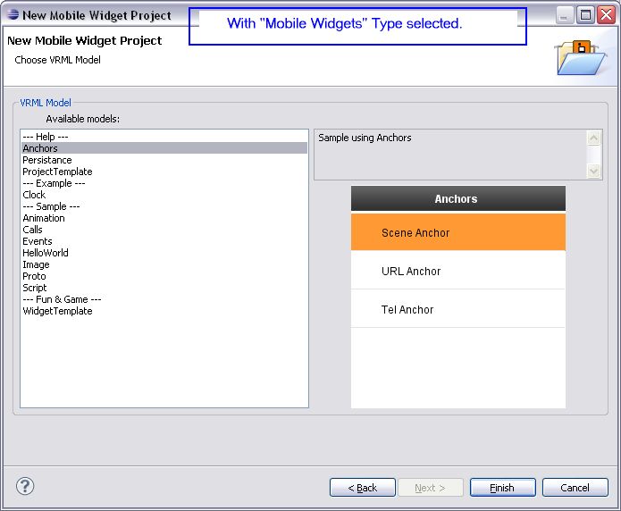
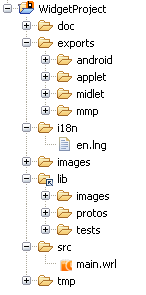
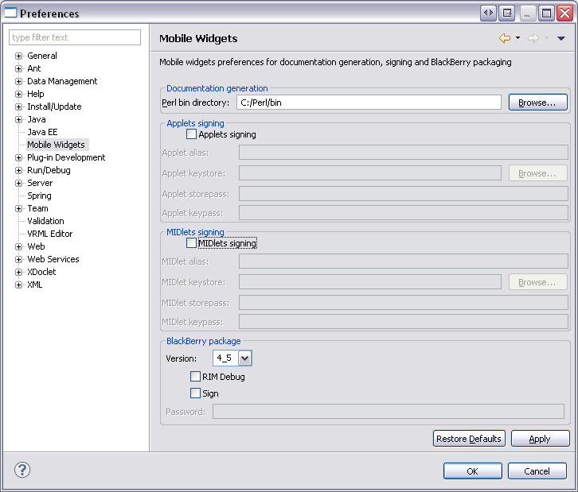
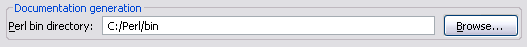
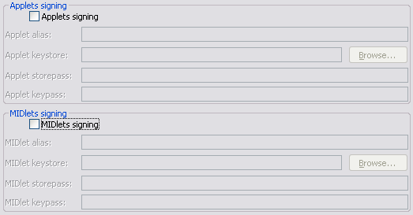
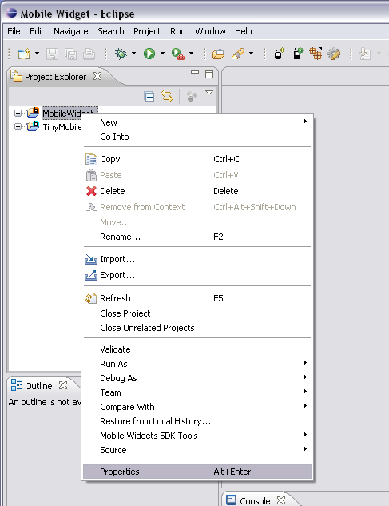
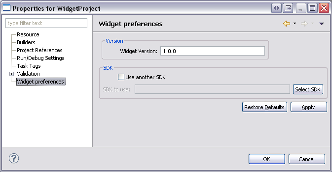
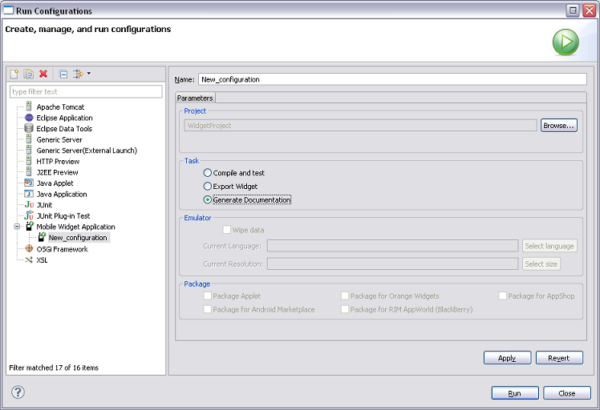

This part aims to describe the Mobile Widget SDK Plug-in. This plug-in, once integrated in the Eclipse platform, provides tools for Mobile Widgets creation, compilation, export and emulation.
The following points will be detailed:
Before you install the plug-in, make sure that your development environment fits the following requirements:
From eclipse folder, launch " eclipse.exe " file to open Eclipse.
There are four ways to create a new Mobile Widget Project: from the Toolbar, the New Widget Project menu or the New Project... menu.
Click on the " New Mobile Widget " button on the Toolbar (marked in blue).
In top menu bar, 2 possibilities:
Click on the " New " button on the Toolbar (marked in blue).
In top menu bar, 2 possibilities:
" New Project - Select a wizard " dialog box is opened.
Select " Widget Project " under " Mobile Widgets SDK " folder.
Select " Next > " button to continue.
" New Mobile Widget Project - Create a new Mobile Widget Project " dialog box is opened.
The Widget Type is defined here. As indicated on the wizard page, there is two choises:
First of all, the global parameters fields have to be filled in. Here is a short description of these parameters:

" New Mobile Widget Project - Choose VRML Model " dialog box is opened.
The new Widget Project is built from an existing VRML model.
These models are functional and provide sample code.
The VRML model to use is selected on the second page of the wizard.
A short description and a screenshot of the selected item are displayed on the right.
When a model is selected, the Widget project creation is completed.
You can click on the " Finish " button.
A complete Widget Project is created.
It is fully functional and can be run once created by using
Run As > Mobile Widget.
Its sources can be used as a starting point for another application or just to provide code samples.
" New Mobile Widget Project - Configure widget style " dialog box is opened.
The third page of the creation wizard is optional.
The widget styles provides different pictures and allows the developer to customize the widget design.
By default, the style of the new widget will be the style of the selected VRML model.
However, this can be modified in this page.
An existing style can be used or a new style can be created.
A new style can be derived from an existing style.
A screenshot is displayed on this page, allowing the developer to see how the selected style will look like.
A newly created project has the following structure:


Depending on the selected widget type, the project icon in the Eclipse workspace is different:
In top menu, select " Window " then " Preferences ".

" Preferences " dialog box is opened.
Select " Mobile Widgets ".
You can configure :

In order to generate the widgets documentation, you must provide the path where Perl is installed.
Specify the path in the " Perl bin directory: " textfield.
By default, this textfield is completed by C:\Perl\bin.

In order to sign Applets and MIDlets, you must provide a keystore and other data, as an alias, a storepass and a keypass.
If the checkbox is checked and correct data are entered in the different textfields, the Applets and/or the MIDlets will automatically be signed when created.
The project preferences page allows modifying the Widget version and the Widget style after the project creation.

2 possibilities:

" Properties for MobileWidget - Widget preferences " dialog box is opened.
The " version " and the " Style " of the selected project are displayed.
They can be modified and taken in account by the project.
There are three different ways to run the Mobile Widget.
In top menu bar, select " Run " then " Run Configurations... ".
" Run Configurations - Create, manage, and run configurations " dialog box is opened.
In the configurations list, choose " Mobile Widget Application " then " New_configuration ".
You can specify a name for this configuration, in the " Name " textfield.
By default, it will be named " New_configuration ".
Select a project on which the configuration will be applied by clicking on the " Browse... " button.
In the " Task " group, select " Compile and test ".
The " Emulator " group is enabled.
There are three configurations items:
" Supported language " or " Supported size " dialog boxes are opened after " Select language " or " Select size " button selected.
" Run Configurations - Create, manage, and run configurations " dialog box is completed.
Click on the " Apply " button to save your configuration.
Then click on the " Run " button to launch it.
The WRL sources are compiled for the current language and resolution and the emulator is launched.
Important:
If you are running a " Tiny Mobile Widget ", the " Project " group of the " Run Configurations " page will look like this:
If you have modified the " Widget Entry Point ", you must update this value for the project to compile.
Note:
In a " Tiny Mobile Widget Project ", the entry point can not be named " main.wrl ".
Whereas in a " Mobile Widget Project ", the entry point must always be named " main.wrl ".
Select a Widget Project in " Project Explorer ".
Click on the " Configuration for tests and export " button on the Toolbar (marked in blue).
" Widget configuration - Parameters for test with emulator and export " dialog box is opened.
The " Test with Emulator " group is enabled.
There are three configurations items:

" Supported language " or " Supported size " dialog boxes are opened after " Select language " or " Select size " button selected.
Once the setup is done, click on the " Finish " button to save it.
Important:
If you are configuring a " Tiny Mobile Widget ", the " Compile " group is added in the " Widget Configuration " page will look like this:
If you have modified the " Widget Entry Point ", you must update this value for the project to compile.
Note:
In a " Tiny Mobile Widget Project ", the entry point can not be named " main.wrl ".
Whereas in a " Mobile Widget Project ", the entry point must always be named " main.wrl ".
This configuration will be used when:
For convenience, a launch shortcut is provided.
To access it, right click on a " Mobile Widget " or a " Tiny Mobile Project " or one of its elements.
Then for running, 2 possibilities :
This shortcut provides the following configuration:
There are three different ways to exporting the Mobile Widget:
In top menu bar, select " Run " then " Run Configurations... ".
" Run Configurations - Create, manage, and run configurations " dialog box is opened.
In the configurations list, choose " Mobile Widget Application " then " New_configuration ".
You can specify a name for this configuration, in the " Name " textfield.
By default, it will be named " New_configuration ".
Select a project on which the configuration will be applied by clicking on the " Browse... " button.
In the " Task " group, select " Export Widget ".
The " Package " group is enabled.
Select one or several packages to create.
There are seven " Packages " purposed:
Click on the " Apply " button to save your configuration.
Then click on the " Run " button to launch the export task(s).
Important:
The Widget Project should contain a " screenshot.png " file, in a " doc/img " folder.
If this file does not exist, a warning is displayed when the Package for Gallery task is selected:
Select a Widget Project in " Project Explorer ".
Click on the " Configuration for tests and export " button on the Toolbar (marked in blue).
" Widget configuration - Parameters for test with emulator and export " dialog box is opened.
In the " Export " group, you can choose the packages to generate when the export task is launched.
Important:

The " Package for Ulight " option is only available for " Tiny Mobile Widgets ".
Click on the " Finish " button to save the configuration.
Once the setup is done, click on the " Export Widget " button on the Toolbar (marked in blue) to launch the selected export tasks.
Select a Widget Project in " Project Explorer ".
To access to Context Menu, right click on a " Mobile Widget " or a " Tiny Mobile Project " or one of its elements.
Then select " Mobile Widgets SDK Tools " and select one of " Package ".
It allows launching export tasks one by one.
The " Package for Ulight " option is only available for " Tiny Mobile Widgets ".
The " Export widget " option launches the packages tasks selected in the " Toolbar configuration " screen.
Documentation in HTML can be generated from the comments present in the VRML code of the widget.
There are two different ways to generate documentation the Mobile Widget:
In top menu bar, select " Run " then " Run Configurations... ".

" Run Configurations - Create, manage, and run configurations " dialog box is opened.
In the configurations list, choose " Mobile Widget Application " then " New_configuration ".
You can specify a name for this configuration, in the " Name " textfield.
By default, it will be named " New_configuration ".
Select a project on which the configuration will be applied by clicking on the " Browse... " button.
In the " Task " group, select " Generate Documentation ".
Click on the " Run " button.
The documentation is generated in the " doc " folder of the Mobile Widget project and opened in a web browser.
Select a Mobile Widget Project in " Project Explorer ".
To access to Context Menu, right click on a " Mobile Widget " or a " Tiny Mobile Project " or one of its elements.
Then select " Mobile Widgets SDK Tools " and select " Generate documentation ".
The documentation is generated in the " doc " folder of the Mobile Widget project and opened in a web browser.
A project obtained from repository check-out which contains all the mandatory elements may not have the required " Mobile Widget " nature.
In this case, the options of the context menus, the " Run Configurations " and the Toolbar are not available for the project.
To convert such a project in a " Mobile Widget " or a " Tiny Mobile Widget " project, use the " Mobile Widgets SDK
Tools ":
To access to Context Menu, right click on another element not a " Mobile Widget " and not a " Tiny Mobile Project ".
Then select " Mobile Widgets SDK Tools ".
Then select your between " convert to Tiny Mobile Project (Generic) " or " convert to Mobile Widget Project ".
Once the project converted, the related actions become available and the needed symbolic links are created.
The project nature is indicated by the icon for "
Mobile Widget Project
" or for " Tiny Mobile Widget Project ".
If you convert a project that should not have been, the nature can always be removed by using the context menu.
To access to Context Menu, right click on a " Mobile Widget " or a " Tiny Mobile Project ".
Then select " Mobile Widgets SDK Tools ".
Then select your between " Remove Mobile Widget Nature ".
The project nature is indicated without an icon.
The Micro Emulator configuration file is available here:
Add these two lines in your " Micro Emulator " configuration file (" config2.xml ") in " <system-properties> " paragraph: